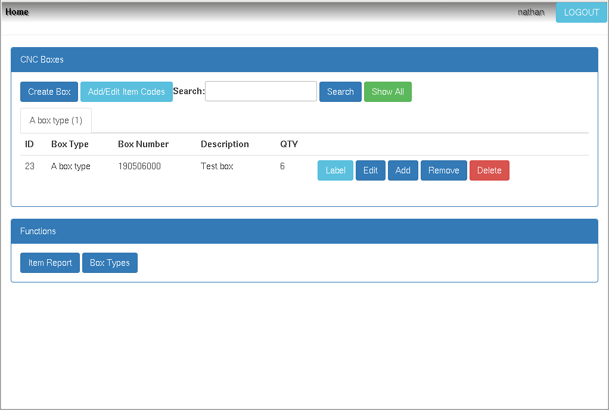
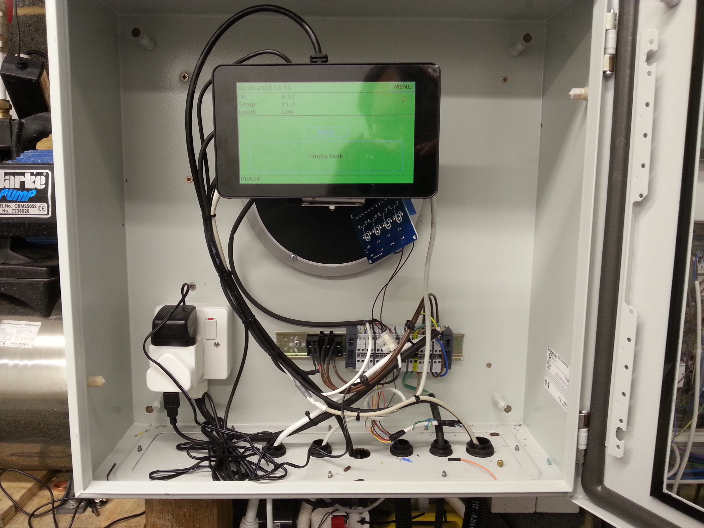
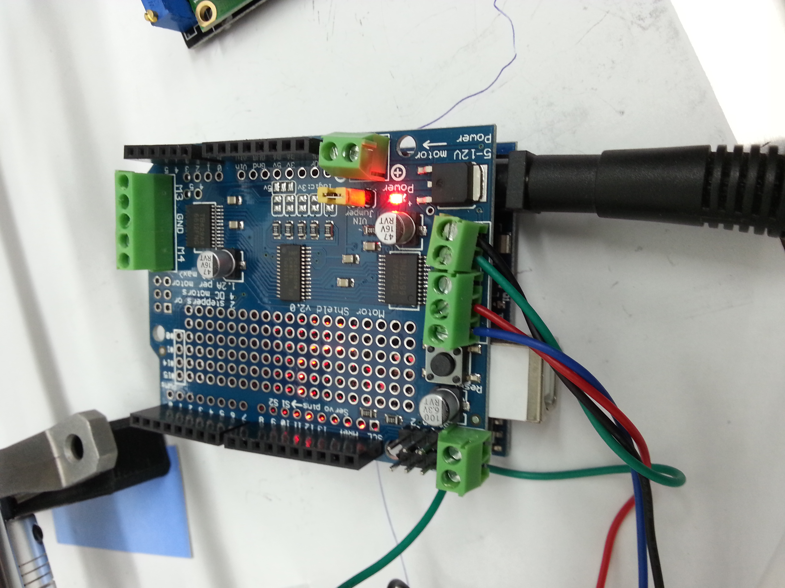
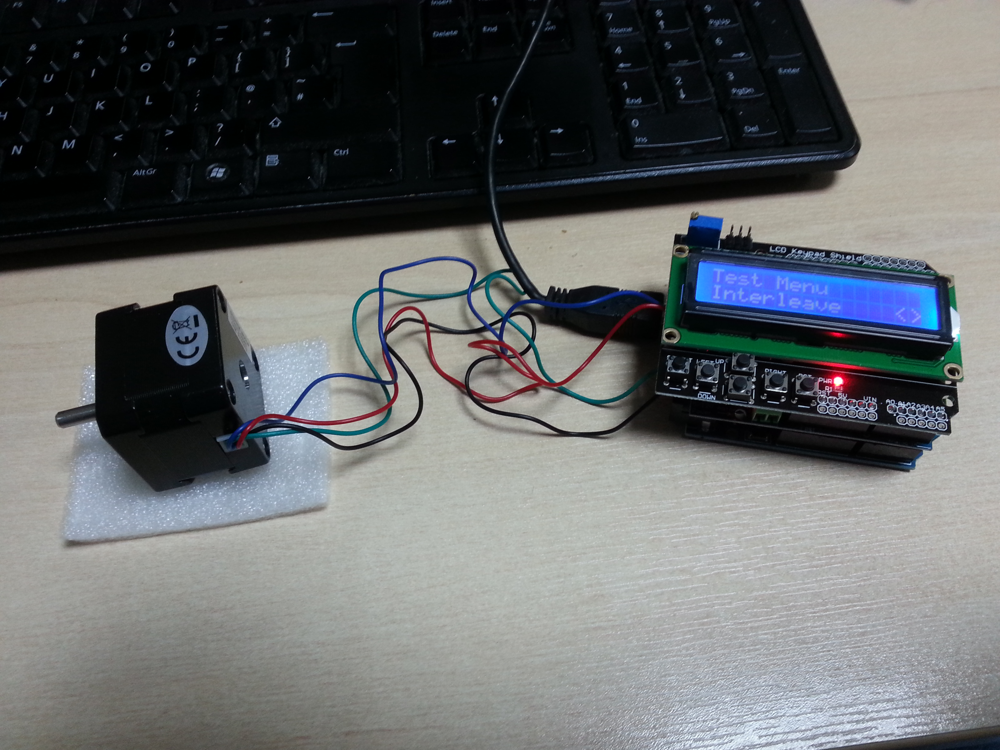

Details of a few development projects I have worked on:
MTS
MTS is a stock tracking system written in PHP that I solely built while working at an IT recycling/reuse company.
It is used to track the status of IT equipment as it moves through the warehouse and to record the specifications of equipment as it is refurbished. Specifications of desktops and laptops could be quickly retrieved by network booting a hardware detection tool that would push a file to a server. This could then be used to automatically populate the item form in the web interface in a single click. Once an item had been processed it would automatically trigger a label printer to print the specifications that would then be attached to the item.
Trade In Manager
Worked on several features as well as general fixes on a mobile phone trade in platform written in PHP and also several associated trade in websites integrated with it.
- Implemented an employee clock-in/timekeeping system within trade in manager for internal staff use. It has an interface for HR to generate various employee timekeeping reports.
- Implemented integration with black belt mobile device testing/erasure software. Allow pulling device specifications and data wipe reports from an API and associating the data with the relevant items in the system.
- Integrating trade in portal sites with the trade in manager backend using an API
CNC-BOX System
This is a small PHP web application I wrote to quickly track the contents of boxes of phones as they moved through a particular department.
- Allows item to be quickly added and removed from boxes by scanning a barcode.
- Can generate a PDF label for a box based on its number and description.
- Can generate a report showing how many of each type of phone are currently boxes.

PI-PH System
A Raspberry Pi application written in Python I solely built to monitor/operate a waste chemical tank and to log the PH level.
- Monitors the tank level (screen colour indicates empty/low/medium/high for visibility at a distance) and PH level.
- Provides functions to log the PH and empty the tank. Uses the RPi GPIO pins to operate a mixer in the tank and a pump to extract the contents to another tank after the PH has been logged.
- Uses RPi touchscreen for control. Interface built using Python Tkinter.

Arduino projects
I have worked on several projects using an Arduino Uno to control custom built machines. Most of those machines are used to perform work on mobile phone cases. The Arduino Uno is a microcontroller programmed using C++ and is being used to operate motors, valves and controls within the machines. The device only has 1KB of data RAM so memory has to be managed carefully.
A few machines I have developed code for:
- Machine that blasts a phone case with water while spinning it at high speed. Door open/close mechanism is also controlled to prevent opening while in operation.
- Machine that blasts sand on a phone case while spinning it at high speed and moving side to side on an arm. The Arduino has to signal more than one stepper motor at once (see my code for controlling stepper motors HERE)
- Laser alignment machine that moves a bracket to align a phone case with an laser. User can select phone model on an LCD screen. I have developed a C++ class to provide a menu system on the LCD.

Loan management systems
Worked with a team of developers to maintain several loan management systems (loan origination and broker systems) written in PHP. Also involved in a project to build a new loan origination system for bridging finance from scratch.
- Worked on internal loan management systems as well as external portals used by brokers and investors.
- Developing microservices using the Lumen framework.
- Developing web applications using Zend 3.
- Some development work done with Java on a PDF generating microservice.